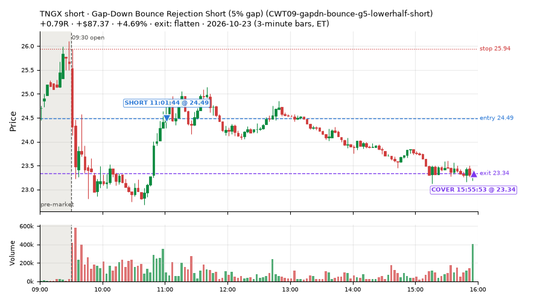
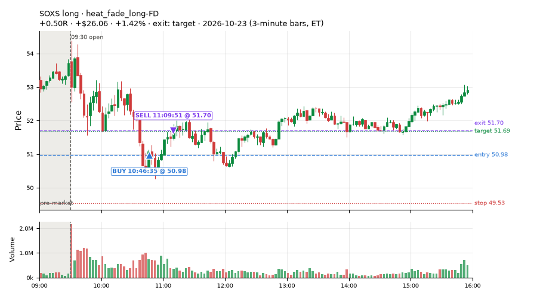
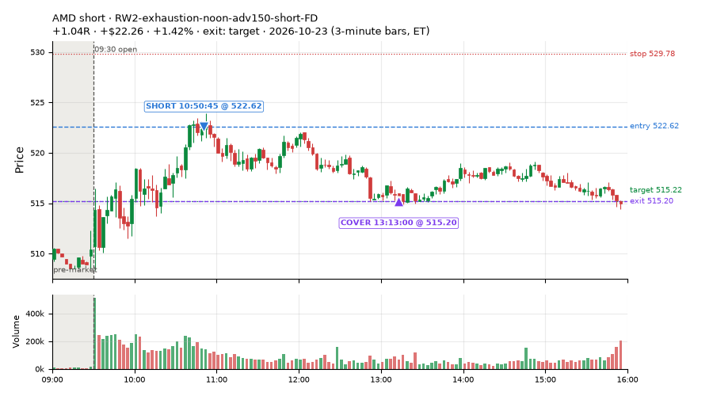
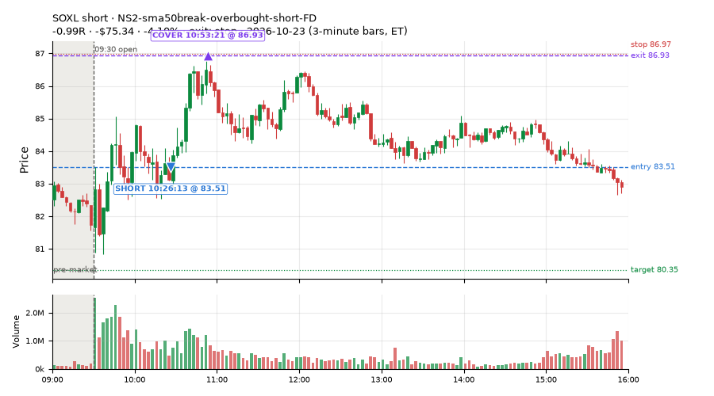
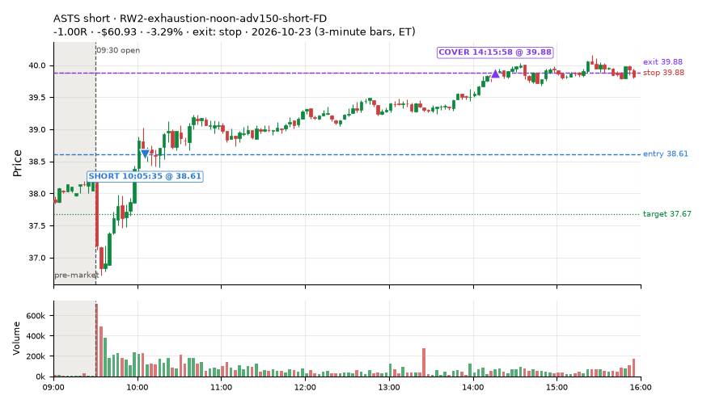
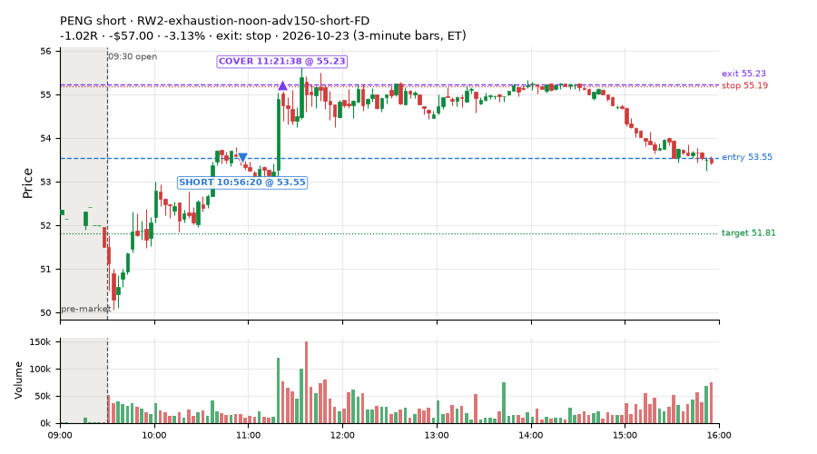
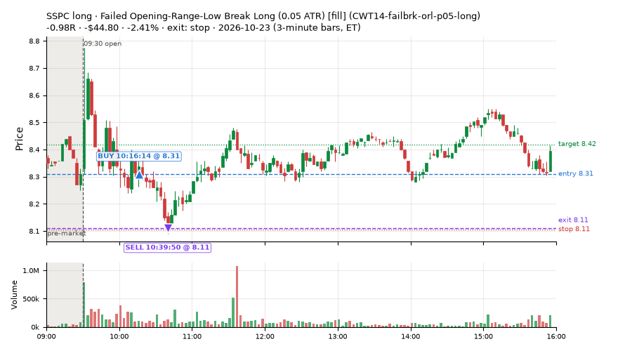
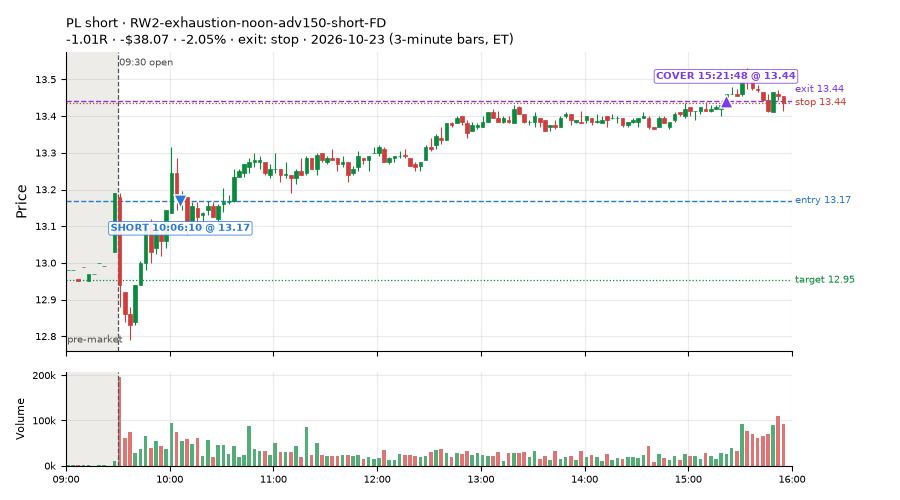

274 trades · win rate 57% · P/L $-570.87
PROBATION: no live setup has passed both locked test periods. 10 owner-directed setups added 2026-10-08 (MarcoFlow top 5 + 5 new), untested live. RW6G1 (RW6 + VWAP band guard) added 2026-10-09, probation.

| Symbol | Setup | Side | In | Out | Entry | Exit | Exit reason | % gained | P/L |
|---|---|---|---|---|---|---|---|---|---|
| TNGX | Gap-Down Bounce Rejection Short (5% gap) (CWT09-gapdn-bounce-g5-lowerhalf-short) | short | 11:01 | 15:55 | 24.49 | 23.34 | flatten | +4.69% | $87.37 |
| SOXS | heat_fade_long-FD | long | 10:46 | 11:09 | 50.98 | 51.70 | target | +1.42% | $26.06 |
| AMD | RW2-exhaustion-noon-adv150-short-FD | short | 10:50 | 13:13 | 522.62 | 515.20 | target | +1.42% | $22.26 |
| Symbol | Setup | Side | In | Out | Entry | Exit | Exit reason | % lost | P/L |
|---|---|---|---|---|---|---|---|---|---|
| SOXL | NS2-sma50break-overbought-short-FD | short | 10:26 | 10:53 | 83.51 | 86.93 | stop | -4.10% | $-75.34 |
| ASTS | RW2-exhaustion-noon-adv150-short-FD | short | 10:05 | 14:15 | 38.61 | 39.88 | stop | -3.29% | $-60.93 |
| PENG | RW2-exhaustion-noon-adv150-short-FD | short | 10:56 | 11:21 | 53.55 | 55.23 | stop | -3.13% | $-57.00 |
| SSPC | CWT14-failbrk-orl-p05-long | long | 10:16 | 10:39 | 8.31 | 8.11 | stop | -2.41% | $-44.80 |
| PL | RW2-exhaustion-noon-adv150-short-FD | short | 10:06 | 15:21 | 13.17 | 13.44 | stop | -2.05% | $-38.07 |








Signal to fill: median 1s, 90th percentile 3s (274 trades). Bars close each minute; the order follows the bar close.
Best excursion (MFE): median 0.46R; worst (MAE) median 0.62R. 21% of trades never got +0.25R in our favour; 0 reached +1R and still closed at or below 0.
| Symbol | Setup | Best R | Worst R | Closed R |
|---|---|---|---|---|
| PLTR | heat_fade_short | +0.73 | -1.13 | -1.06 |
| TMF | CWT14-failbrk-orl-p05-long | +0.68 | -1.09 | -1.06 |
| TMF | CWT14-failbrk-orl-p10-long | +0.68 | -1.09 | -1.06 |
| TMF | CWT14-failbrk-orl-p05-lowvol-long | +0.68 | -1.09 | -1.06 |
| VG | RW2-exhaustion-noon-adv150-short-FD | +0.41 | -1.34 | -1.32 |
| Entry time | Trades | Win | Avg R | P/L |
|---|---|---|---|---|
| 09:50-10:30 | 116 | 52% | -0.18 | $-551.77 |
| 10:30-11:30 | 118 | 60% | -0.03 | $-54.05 |
| 11:30-13:00 | 28 | 64% | +0.17 | $20.64 |
| 13:00-14:00 | 1 | 100% | +0.41 | $7.35 |
| 14:00-16:00 | 11 | 55% | +0.04 | $6.95 |
| Setup | Trades | Win | Avg R | Adj R (net of SPY) | P/L |
|---|---|---|---|---|---|
| Gap-Down Bounce Rejection Short (5% gap) (CWT09-gapdn-bounce-g5-lowerhalf-short) | 1.0 | 100% | +0.79 | +0.73 | $87.37 |
| Stretched Above VWAP Fade (CWT13-vwapstretch-z05-short) | 12.0 | 58% | +0.17 | -0.13 | $9.12 |
| Failed Opening-Range-Low Break Long (0.05 ATR) [fill] (CWT14-failbrk-orl-p05-long) | 28.0 | 50% | -0.25 | -0.52 | $-116.69 |
| Failed Opening-Range-Low Break Long (0.05 ATR, low volume) [fill] (CWT14-failbrk-orl-p05-lowvol-long) | 28.0 | 57% | -0.14 | -0.47 | $-56.09 |
| Failed Opening-Range-Low Break Long (0.1 ATR) [fill] (CWT14-failbrk-orl-p10-long) | 45.0 | 71% | +0.07 | -0.06 | $79.74 |
| Failed Opening-Range-Low Break Long (low volume) (CWT14-failbrk-orl-p10-lowvol-long) | 34.0 | 68% | +0.04 | -0.05 | $0.70 |
| Failed Prior-Day-High Break Short (0.05 ATR, low volume) [fill] (CWT14-failbrk-pdh-p05-lowvol-short) | 11.0 | 55% | -0.27 | -0.24 | $-60.91 |
| Failed Prior-Day-High Break Short (low volume) (CWT14-failbrk-pdh-p10-lowvol-short) | 12.0 | 50% | -0.29 | -0.44 | $-102.59 |
| Failed Prior-Day-High Break Short (0.1 ATR) [fill] (CWT14-failbrk-pdh-p10-short) | 18.0 | 61% | -0.06 | -0.19 | $-54.05 |
| Opening-Range Low Sweep Reversal (LIQ-orl-sweep-open15-s25-long) | 26.0 | 50% | -0.06 | +0.21 | $-69.23 |
| MF1-945-flowsell-vwapup-FD | 4.0 | 50% | +0.38 | -0.20 | $19.77 |
| NS2-sma50break-overbought-short-FD | 6.0 | 33% | -0.12 | -0.17 | $-65.07 |
| RW2-exhaustion-noon-adv150-short-FD | 15.0 | 33% | -0.47 | -0.60 | $-232.06 |
| RW6-ns2-up3-short-FD | 2.0 | 50% | -0.07 | -0.15 | $-3.90 |
| ST2-slope20up-long-am-t05s1-FD | 5.0 | 100% | +0.47 | +0.45 | $62.65 |
| heat_fade_long-FD | 1.0 | 100% | +0.50 | +0.50 | $26.06 |
| Morning Bounce Fade (heat_fade_short) failed Apr-Jun holdout: -0.015R/trade over 1420 trades | 6.0 | 0% | -0.66 | -0.59 | $-107.44 |
| heat_fade_short-FD | 20.0 | 55% | +0.07 | -0.30 | $11.75 |
Market direction (SPY, beta 1) accounted for $238.08 of today's $-570.87; the rest ($-808.95) came from the setups themselves. Avg R net of SPY: -0.21 (incl. a hedge leg's cost; report only).
21 setups live today. Today: 584 signals, 274 taken, 24 lost because another setup held the symbol (4%). Since 2026-10-21 (3 sessions): 2008 signals, 902 taken, 109 lost to other setups (5%). Peak open positions today 113 of 200 slots. Earnings blackout removed 1006 symbols before scanning.
Simulated playing time (not live): 1103 what-if trades of signals not taken, avg -0.03R, 60% winners; of them 109 lost to another setup (avg -0.23R).
Crowded out: NS2-sma50break-overbought-short · Starved: MF1-945-flowsell-vwapup-FD, heat_fade_long, heat_fade_long-FD, heat_fade_short-FD
| Prio | Setup | Today sig / taken | Sessions | Signals / taken / trades | Taken/day | Expected/day | Lost to other setups | Lost to (setup n) | Top skip reasons | SIMULATED: not-taken n / avg R / win | Verdict |
|---|---|---|---|---|---|---|---|---|---|---|---|
| 1 | ST1-ordn-long-pm-t05s1-FD ST1-ordn-long-pm-t05s1-FD | 0 / 0 | 3 | 5 / 3 / 3 | 1.00 | 3.49 | 0 | – | spread / quote / size 1, broker rejected 1 | 2 / -0.20R / 50% | slow 5.0 entries/week; ~12 weeks to 60 trades |
| 2 | RW6-ns2-up3-short-FD RW6-ns2-up3-short-FD | 2 / 2 | 3 | 13 / 8 / 8 | 2.67 | 7.12 | 0 | – | daily loss cap 2, spread / quote / size 2, not shortable / shorts off 1 | 5 / +0.05R / 60% | slow 13.3 entries/week; ~4 weeks to 60 trades |
| 3 | NS2-sma50break-overbought-short-FD NS2-sma50break-overbought-short-FD | 7 / 6 | 3 | 31 / 17 / 17 | 5.67 | 17.08 | 0 | – | daily loss cap 8, not shortable / shorts off 3, spread / quote / size 3 | 14 / +0.19R / 57% | ok 28.3 entries/week |
| 4 | Big Gainer Average Reclaim Fade NS2-sma50break-overbought-short | 4 / 0 | 3 | 20 / 4 / 4 | 1.33 | 5.74 | 11 | NS2-sma50break-overbought-short-FD 11, RW6-ns2-up3-short-FD 1 | symbol held by another setup 11, spread / quote / size 3, not shortable / shorts off 2 | 16 / +0.09R / 56% | crowded-out 11 of 20 signals (55%) lost to setups already holding the symbol |
| 5 | MF1-945-flowsell-vwapup-FD MF1-945-flowsell-vwapup-FD | 10 / 4 | 3 | 30 / 15 / 15 | 5.00 | 23.94 | 0 | – | spread / quote / size 12, not shortable / shorts off 3 | 15 / -0.25R / 33% | starved 5.00 entries/day vs ~23.94 expected |
| 6 | ST2-slope20up-long-am-t05s1-FD ST2-slope20up-long-am-t05s1-FD | 5 / 5 | 3 | 47 / 36 / 36 | 12.00 | 24.03 | 6 | heat_fade_short-FD 5, heat_fade_short 1 | symbol held by another setup 6, spread / quote / size 5 | 11 / -0.31R / 36% | ok 60.0 entries/week |
| 7 | Midday Gap-Up Dip Buy heat_fade_long | 0 / 0 | 3 | 9 / 6 / 6 | 2.00 | 30.36 | 1 | heat_fade_long-FD 1 | spread / quote / size 2, symbol held by another setup 1 | 3 / +0.22R / 67% | starved 2.00 entries/day vs ~30.36 expected |
| 8 | Opening-Range Low Sweep Reversal LIQ-orl-sweep-open15-s25-long | 37 / 26 | 3 | 78 / 60 / 60 | 20.00 | – | 5 | CWT14-failbrk-orl-p10-long 5, CWT14-failbrk-orl-p05-lowvol-long 5, CWT14-failbrk-orl-p10-lowvol-long 3 | per-setup cap 6, symbol held by another setup 5, spread / quote / size 5 | 18 / -0.11R / 44% | ok 100.0 entries/week |
| 9 | RW2-exhaustion-noon-adv150-short-FD RW2-exhaustion-noon-adv150-short-FD | 34 / 15 | 3 | 124 / 46 / 46 | 15.33 | 50.34 | 1 | CWT14-failbrk-orl-p10-lowvol-long 1, CWT14-failbrk-orl-p10-long 1 | daily loss cap 48, not shortable / shorts off 20, spread / quote / size 9 | 78 / -0.16R / 46% | ok 76.7 entries/week |
| 10 | heat_fade_long-FD heat_fade_long-FD | 2 / 1 | 3 | 26 / 11 / 11 | 3.67 | 51.74 | 3 | heat_fade_long 3, ST1-ordn-long-pm-t05s1-FD 1 | spread / quote / size 7, daily loss cap 5, symbol held by another setup 3 | 15 / +0.62R / 87% | starved 3.67 entries/day vs ~51.74 expected |
| 11 | Failed Opening-Range-Low Break Long (low volume) CWT14-failbrk-orl-p10-lowvol-long | 43 / 34 | 3 | 152 / 86 / 86 | 28.67 | – | 2 | CWT14-failbrk-orl-p10-long 1, CWT14-failbrk-orl-p05-long 1, LIQ-orl-sweep-open15-s25-long 1 | daily loss cap 35, per-setup cap 16, spread / quote / size 12 | 65 / -0.01R / 66% | ok 143.3 entries/week |
| 12 | Failed Opening-Range-Low Break Long (0.1 ATR) [fill] CWT14-failbrk-orl-p10-long | 57 / 45 | 3 | 198 / 103 / 103 | 34.33 | – | 2 | CWT14-failbrk-orl-p05-lowvol-long 1, CWT14-failbrk-orl-p05-long 1, CWT14-failbrk-orl-p10-lowvol-long 1 | daily loss cap 46, per-setup cap 31, spread / quote / size 14 | 94 / -0.07R / 64% | ok 171.7 entries/week |
| 13 | Morning Bounce Fade heat_fade_short | 11 / 6 | 3 | 55 / 31 / 31 | 10.33 | 31.76 | 0 | – | spread / quote / size 22, not shortable / shorts off 2 | 24 / -0.13R / 38% | ok 51.7 entries/week |
| 14 | Failed Opening-Range-Low Break Long (0.05 ATR, low volume) [fill] CWT14-failbrk-orl-p05-lowvol-long | 98 / 28 | 3 | 317 / 120 / 120 | 40.00 | – | 1 | CWT14-failbrk-orl-p10-lowvol-long 1, CWT14-failbrk-orl-p10-long 1, CWT14-failbrk-orl-p05-long 1 | daily loss cap 129, per-setup cap 54, spread / quote / size 13 | 196 / -0.07R / 65% | ok 200.0 entries/week |
| 15 | heat_fade_short-FD heat_fade_short-FD | 58 / 20 | 3 | 249 / 92 / 92 | 30.67 | 173.78 | 44 | heat_fade_short 31, LIQ-orl-sweep-open15-s25-long 7, CWT14-failbrk-orl-p05-long 3 | daily loss cap 51, symbol held by another setup 44, spread / quote / size 36 | 157 / +0.11R / 53% | starved 30.67 entries/day vs ~173.78 expected |
| 16 | Failed Opening-Range-Low Break Long (0.05 ATR) [fill] CWT14-failbrk-orl-p05-long | 124 / 28 | 3 | 429 / 172 / 172 | 57.33 | – | 33 | CWT14-failbrk-orl-p10-lowvol-long 26, CWT14-failbrk-orl-p10-long 26, CWT14-failbrk-orl-p05-lowvol-long 26 | daily loss cap 100, per-setup cap 85, spread / quote / size 39 | 257 / -0.07R / 64% | ok 286.7 entries/week |
| 17 | Gap-Down Bounce Rejection Short (5% gap) CWT09-gapdn-bounce-g5-lowerhalf-short | 6 / 1 | 3 | 62 / 12 / 12 | 4.00 | – | 0 | – | not shortable / shorts off 37, daily loss cap 11, spread / quote / size 2 | 50 / +0.35R / 66% | ok 20.0 entries/week |
| 18 | Failed Prior-Day-High Break Short (0.05 ATR, low volume) [fill] CWT14-failbrk-pdh-p05-lowvol-short | 33 / 11 | 2 | 84 / 24 / 24 | 12.00 | – | 0 | – | daily loss cap 42, spread / quote / size 13, not shortable / shorts off 4 | 60 / -0.20R / 57% | ok 60.0 entries/week |
| 19 | Failed Prior-Day-High Break Short (low volume) CWT14-failbrk-pdh-p10-lowvol-short | 14 / 12 | 2 | 40 / 26 / 26 | 13.00 | – | 0 | – | spread / quote / size 11, daily loss cap 2, not shortable / shorts off 1 | 14 / -0.28R / 57% | ok 65.0 entries/week |
| 20 | Failed Prior-Day-High Break Short (0.1 ATR) [fill] CWT14-failbrk-pdh-p10-short | 25 / 18 | 1 | 25 / 18 / 18 | 18.00 | – | 0 | – | spread / quote / size 5, not shortable / shorts off 2 | 7 / -0.01R / 71% | ok 90.0 entries/week |
| 21 | Stretched Above VWAP Fade CWT13-vwapstretch-z05-short | 14 / 12 | 1 | 14 / 12 / 12 | 12.00 | – | 0 | – | spread / quote / size 2 | 2 / -0.83R / 0% | ok 60.0 entries/week |
Every trade is attached as a CSV you can open and edit in Excel or Google Sheets. Live page: https://misiti15.github.io/MCF/live/